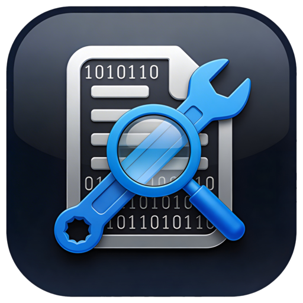
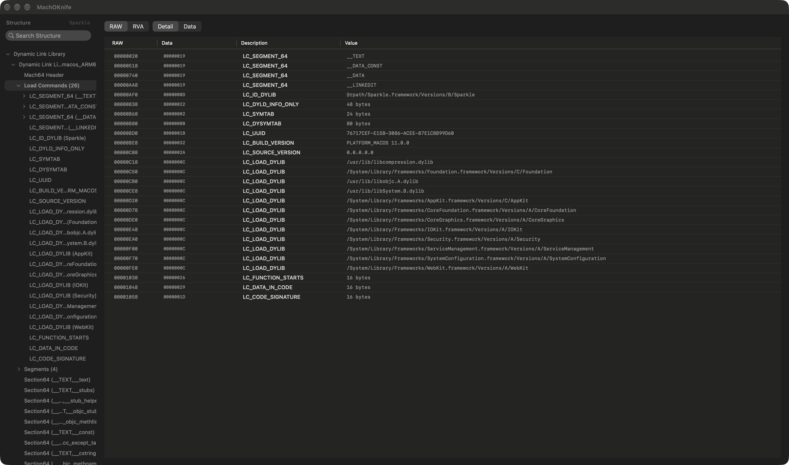

原生 macOS Mach-O 查看与编辑工具。MachOView 风格的结构浏览器，加上重写平台标记、打包 XCFramework、合并 / 拆分 / 移除架构、污染检查等常用二进制工具，同样的能力也可以通过命令行 machoe-cli 使用。
A native macOS app for inspecting and editing Mach-O binaries. A MachOView-style structure browser plus everyday binary tools — retag, XCFramework packaging, merge / split / remove architectures, contamination checks — with the same tooling in the machoe-cli command-line utility.

machoe-cli，在偏好设置中一键安装，方便写进脚本与 CI。The app bundles machoe-cli; install it from Preferences and use it in scripts and CI.支持可执行文件、dylib、framework、目标文件、通用二进制、静态库 .a 与 dyld 共享缓存。Executables, dylibs, frameworks, object files, universal binaries, static libraries (.a) and dyld shared caches.
在「偏好设置 › CLI」中安装随 App 提供的 machoe-cli，运行 machoe-cli help <command> 查看全部选项。Install the bundled machoe-cli from Preferences › CLI, then run machoe-cli help <command> for every option.
machoe-cli info /path/to/binary # per-slice overview, add --json
machoe-cli check-contamination libSDK.a --mode architecture --target arm64
machoe-cli merge arm64/libSDK.a x86_64/libSDK.a --output /tmp/libSDK.a
machoe-cli remove-arch MyLib.framework/MyLib --arch x86_64 --in-place
machoe-cli retag-platform libExample.dylib --platform macos --min 13.0 --sdk 14.0 --output /tmp/out.dylib
machoe-cli build-xcframework --source-library libSDK.a --ios-simulator-source-library libSDK-sim.a \
--headers-dir Headers --output /tmp/SDK.xcframework
machoe-cli validate /path/to/binary
不确定芯片类型？打开「苹果菜单 › 关于本机」，看“芯片”或“处理器”一栏。Not sure which chip you have? Open › About This Mac and check “Chip” or “Processor”.
machoe-cli 安装到 PATH 中的目录。For the CLI, install machoe-cli into a directory on your PATH from Preferences › CLI.